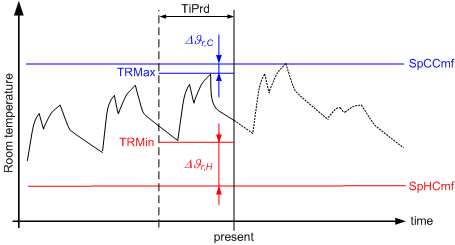
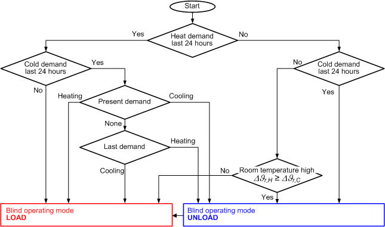

RTHLD：热室负荷分析
块 RTHLD (FB861) 根据零件供热和制冷需求信号以及过去的最低和最高室温计算房间热负荷条件。
应用：确定的热房间负载条件（负载、卸载）特别用于房间内的百叶窗控制，以被动地利用太阳热或防止太阳热（例如图表{RThLd01}）。 RTHLD_SiUn (FB861)、RTHLD_UsUn (FB799)
工作原理
Step | Process |
1 | 最后的加热状态 [HCSta] = 评估加热。
|
最后的冷却状态 [HCSta] = 评估冷却。
| |
2 | 计算过去时间段 [TiPrd] 期间最低室温 [TRMin] 与舒适供暖设定点 [SpHCmf] 的偏差：
 |
计算过去时间段 [TiPrd] 内最高室温 [TRMax] 与制冷设定点舒适度 [SpCCmf] 的偏差：
| |
| The thermal room load condition is calculated (see Function description). 结果输出以下值：
|
热室负荷状态功能说明

Heating demand
如果 [TiPrd] 内仅存在一项供热需求（无制冷需求），则热室负载条件设置为负载。即使当前不存在供暖需求，该函数也会假设将来会出现供暖需求（持续性预测）。
因此，百叶窗等系统可以支持供暖。
Cooling demand
如果 [TiPrd] 内仅存在一项制冷需求（无制热需求），则热室负荷条件设置为卸载。即使当前不存在冷却需求，该函数也会假设将来会出现冷却需求（持续性预测）。
因此，百叶窗等系统可以支持冷却。
No heating demand, no cooling demand
如果 [TiPrd] 内不存在供暖需求和制冷需求，室温测量可确定房间热负荷状况：
如果室温处于舒适室温设定点范围的上限（条件 Δϑr,H≥ Δϑr,C).
在 Δθr,H< Δϑr,C，热室负荷条件设置为负荷。
因此，百叶窗等系统可能会影响尽可能将室温维持在舒适室温设定值范围的中间。
heating demand AND cooling demand
如果 [TiPrd] 内存在供暖需求 AND 和制冷需求，则热室负载条件由最后的需求确定：
- The thermal room load condition is set to load if a heating demand currently exists.
- The thermal room load condition is set to unload if a cooling demand currently exists.
- The thermal room load condition is set to unload if no demand currently exists and the last occurring demand was a heating demand. This is based on the assumption that heating and cooling will change within [TiPrd] and continue to do so in the future as well. As a result, systems such as blinds should always be ready to anticipate the next demand.
- The thermal room load condition is set to load if no demand currently exists and the last occurring demand was a cooling demand. This is based on the assumption that heating and cooling will change within [TiPrd] and continue to do so in the future as well. As a result, systems such as blinds should always be ready to anticipate the next demand.
示例：使用百叶窗控制来实现热负载条件（不是函数的组成部分）。
如果热负荷状态等于负荷，则百叶窗在白天利用太阳辐射（即百叶窗应尽可能打开）并在夜间阻止热量从房间流向环境（即百叶窗应尽可能关闭）。
如果热房间负荷状态等于空载，百叶窗应在白天防止太阳辐射（即百叶窗应尽可能关闭），并在夜间允许热量从房间流向环境（即百叶窗应尽可能打开）。
引脚说明
Pin | Description | |
HCSta | 加热/cooling状态 | |
既不是也不是 | 无（当前）供暖或制冷需求 | |
加热 | （现）供热需求 | |
冷却 | （目前）冷却需求 | |
TiPrd | 时间段 | |
SpCCmf | 舒适的冷却设定值 | |
SpHCmf | 舒适的供暖设定值 | |
TRMax | 最高室温 | |
TRMin | 最低室温 | |
RThLdCnd | 热室负荷条件 | |
加载 | 房间有热室负荷工况负荷： | |
卸下 | 房间有热室负荷条件卸载： | |
TiEldHeat | 加热超时 | |
TiEldCool | 过期冷却时间 | |
输入值
Pin | Description | Data type | Standard value | Engineering unit or text group | Min. | Max. |
HCSta | 加热/cooling状态 | INT | 1 | 既不加热/cooling. | 1 | 3 |
TiPrd | 时间段 | TIME | T#1D_0H_0M_0S_0MS |
|
|
|
SpCCmf | 舒适的冷却设定值 | REAL | 24.0 | °C | 10.0 | 35.0 |
75.0 | °F | 50.0 | 95.0 | |||
SpHCmf | 舒适的供暖设定值 | REAL | 21.0 | °C | 10.0 | 35.0 |
70.0 | °F | 50.0 | 95.0 | |||
TRMax | 最高室温 | REAL | 22.5 | °C | 10.0 | 35.0 |
72.5 | °F | 50.0 | 95.0 | |||
TRMin | 最低室温 | REAL | 22.5 | °C | 10.0 | 35.0 |
72.5 | °F | 50.0 | 95.0 |
输出值
Pin | Description | Data type | Standard value | Engineering unit or text group | Min. | Max. |
RThLdCnd | 热室负荷条件 | INT | 2 | 装载、卸载 | 2 | 1 |
TiEldHeat | 加热超时。 | TIME | T#0D_0H_0M_0S_0MS |
|
|
|
TiEldCool | 过期时间冷却。 | TIME | T#0D_0H_0M_0S_0MS |
|
|
|
工程
与其他块的典型互连
Pin | Description |
HCSta | 房间当前的供暖需求/cooling 通过此输入报告给模块。如果供暖和/or制冷不是基于单独的房间控制，则可以互连该区域的供暖/cooling需求。 |
TiPrd | 该输入通常不互连。设置值通常保留默认值 24 小时。 |
SpCCmf | 用于冷却的当前有效舒适室温设定值与该输入互连。 |
SpHCmf | 当前有效的供暖舒适室温设定点与该输入互连。 |
TRMax | 该输入必须与过去时间段的最高室温 [TiPrd] 互连。 |
TRMin | 该输入必须与过去时间段 [TiPrd] 的最低室温互连。 |
RThLdCnd | 该输出通常进一步互连到百叶窗的控制逻辑。 |
TiEldHeat | 输出用于诊断，通常不互连。 |
TiEldCool | 输出用于诊断，通常不互连。 |
使用
该函数用于 HVAC 应用程序以支持加热和冷却及其操作（几乎）免费。此类系统包括通风设备中的百叶窗或热回收装置。这些类型的 HVAC 应用程序还可以控制主动加热和冷却系统。
该功能确保此类系统能够满足当前的供暖和制冷需求。此外，如果当前不存在加热和冷却需求，该功能可确保此类系统以支持方式运行。
注意：如果运行支持系统比主动加热或冷却便宜但不是免费的，则不应使用该功能。此类系统通常需要其他计算，例如使用冷却塔进行自然冷却。
过程响应
标准（参见General rules and information).
故障排除